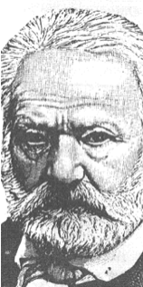

Les Misérables
(1) Victor Hugo
VH : Ma chère Adèle, Je suis parti d’Etaples de bon matin. Je voulais déjeuner à Montreuil sur Mer. Montreuil sur Mer serait mieux nommé Montreuil sur Plaine. C’était autrefois une charmante ville. Ce n’est plus maintenant qu’une citadelle. Mais, des remparts, on a une vue admirable de coteaux et de prairies, car la ville est haut située.
VH : Ses jarrets fléchirent brusquement sous lui comme si une puissance invisible l’accablait tout à coup du poids de sa mauvaise conscience. Et il cria : « Je suis un misérable ! ». Beaucoup d’hommes ont ainsi un dragon qui les ronge, un désespoir qui habite leur nuit. Là était le secret de Jean Valjean.
(2) Petit-Gervais
J’ai rencontré un petit enfant qui mordait dans une grosse pomme. « Qui t’a donné cette pomme ? » lui ai-je dit. Il m’a répondu : « Je ne sais pas, c’est tombé de l’arbre, c’est le vent, c’est personne ». Je lui ai donné dix sous et je lui ai dit : « Mon enfant, quand ce n’est personne, c’est Dieu ». J’aurais pu ajouter : « Et quand c’est quelqu’un, c’est Dieu encore ».
VH : Ses jarrets fléchirent brusquement sous lui comme si une puissance invisible l’accablait tout à coup du poids de sa mauvaise conscience. Et il cria : « Je suis un misérable ! ». Beaucoup d’hommes ont ainsi un dragon qui les ronge, un désespoir qui habite leur nuit. Là était le secret de Jean Valjean.
(3) Jean Valjean
JV: Approchez, approchez tous deux. Oh! C'est bon de mourir comme cela! Toi aussi, tu m'aimes, ma Cosette. C'est à toi que je lègue les deux chandeliers.
MM: L'abomination! Il nous a volé notre argenterie! Monseigneur, Monseigneur! L'homme est parti! L'argenterie est volée! Aussi a-t-on idée! Recevoir un homme comme cela! Et le loger à côté de soi!
B: Ah! Vous voilà! Je suis aise de vous voir. Eh bien, mais! Je vous avais donné les chandeliers aussi. Pourquoi ne les avez-vous pas emportés avec vos couverts? Jean Valjean, mon frère, vous n'appartenez plus au mal, mais au bien. C'est votre âme que je vous achète; je la retire à l'esprit de perdition et je la donne à Dieu.
JV: Cosette, te rappelles-tu quand j'ai pris l'anse du seau d'eau? Tu étais dans le bois, tu avais bien peur; c'est la première fois que j'ai touché ta pauvre petite main.
Voici le temps de te dire le nom de ta mère. Elle s'appelait Fantine. Elle a eu en malheur tout ce que tu as en bonheur.
Ces Thénardier ont été méchants. Il faut leur pardonner. Voyez-vous, Monsieur Marius, moi aussi il m'est arrivé des choses dans ma vie.
Pour vivre, autrefois, j'ai volé un pain. J'ai été 19 ans aux galères. Puis j'ai été condamné à perpétuité. Pour récidive.
VH : Dans ma pensée, Les Misérables ne sont autre chose qu'un livre ayant la fraternité pour base et le progrès pour cime.
Oui, autant qu'il est permis à l'homme de vouloir, je viens détruire la fatalité humaine, je condamne l'esclavage, je chasse la misère, j'enseigne l'ignorance, je traite la maladie, j'éclaire la nuit, je hais la haine. Voilà ce que je suis et voilà pourquoi j'ai fait les Misérables.
Histoire d'un saint,
histoire d'un homme,
histoire d'une femme,
histoire d'une poupée…
(5) Javert
J : Mais qu’est-ce que c’est que ce Monsieur Madeleine ? Pour sûr je l’ai vu quelque-part.
VH : Les paysans asturiens sont convaincus que dans toute portée de louve il y a un chien, lequel est tué par la mère, sans quoi en grandissant il dévorerait les autres petits. Donnez une face humaine à ce chien fils d’une louve, et ce sera Javert. Il remplissait à Montreuil sur Mer les fonctions pénibles, mais utiles, d’inspecteur de police. Il avait, dans sa jeunesse, été employé dans les chiourmes du midi.
J : Monsieur... Madeleine ! Je n’ai connu qu’un seul homme capable de faire cela... C’était un forçat... Du bagne de Toulon.
(7) L'onde et l'ombre
VH : Un homme à la mer !
Il est dans l’eau monstrueuse. Tous les haillons de l’eau s’agitent autour de sa tête, une populace de vagues crache sur lui, de confuses ouvertures le dévorent à demi ; chaque fois qu’il enfonce, il entrevoit les précipices pleins de nuit ; d’affreuses végétations inconnues le saisissent, lui nouent les pieds, le tirent à elle ; il sent qu’il devient abîme, il fait partie de l’écume. Il semble que toute cette eau soit de la haine.
La nuit descend, il est seul, il enfonce, il sent au dessous de lui les vagues monstres de l’invisible ; il appelle.
Il n’y a plus d’hommes. Où est Dieu ?
Il appelle. Quelqu’un ! Quelqu’un ! Il appelle toujours. Rien à l’horizon. Rien au ciel. Il implore l’étendue, la vague, l’algue, l’écueil ; cela est sourd. Il supplie la tempête ; la tempête imperturbable n’obéit qu’à l’infini.
Autour de lui l’obscurité, la brume, la solitude, le tumulte orageux et inconscient, le plissement indéfini des eaux farouches. Vents, nuées, tourbillons, souffles, étoiles inutiles ! Que faire ?
O marche implacable des sociétés humaines ! Océan où tombe tout ce que laisse tomber la loi !.
La mer c’est l’immense misère.
J : Jean Valjean, forçat libéré, est resté 19 ans au bagne. 5 ans pour vol avec effraction. 14 ans pour avoir tenté de s’évader 4 fois. Cet homme est très dangereux.
(8) Industrie
VH : De temps immémorial, Montreuil sur Mer avait pour industrie spéciale l’imitation des jais anglais et des verroteries noires d’Allemagne. Cette industrie avait toujours végété. VH : Vers la fin de 1815, un homme, un inconnu, était venu s’établir dans la ville et avait eu l’idée de substituer, dans cette fabrication, la gomme-laque à la résine. En moins de 3 ans, l’auteur de ce procédé était devenu riche, ce qui est bien, et avait tout fait riche autour de lui, ce qui est mieux.
(9) Incendie
De son origine, on ne savait rien. Il parait que , le jour même où il faisait obscurément son entrée dans la petite ville de Montreuil sur Mer, un gros incendie venait d’éclater à la maison commune. Cet homme s’était jeté dans le feu et avait sauvé au péril de sa vie 2 enfants qui se trouvaient être ceux du capitaine de gendarmerie; ce qui fait qu’on n’avait pas songé à lui demander son passeport. Depuis lors, on avait su son nom. Il s’appelait le père Madeleine.
(10) Monsieur Madeleine
VH : Grâce aux progrès rapides de cette industrie qu’il avait si admirablement remaniée, Montreuil sur Mer était devenu un centre d’affaires considérable. Dans les premiers temps, quand on le vit commencer, les bonnes âmes dirent :
C1 :C’est un gaillard qui veut s’enrichir.
VH :Quand on le vit enrichir le pays avant de s’enrichir lui-même, les mêmes bonnes âmes dirent :
C1 : C’est un ambitieux.
VH : Cela semblait d’autant plus probable que cet homme était religieux. Le député local, qui flairait partout des concurrences, ne tarda pas à s’inquiéter. Quand il vit le riche manufacturier Madeleine aller à la basse messe de sept heures, il résolut de le dépasser. Il prit un confesseur jésuite et alla à la grand’messe et à vêpres.
A mesure qu’il montait, la société le réclamait. Les petits salons guindés de Montreuil sur Mer s’ouvrirent au millionnaire. On lui fit mille avances. Cette fois encore les bonnes âmes ne furent point empêchées.
C1 : C’est un homme ignorant et de basse éducation.
C2 : On ne sait pas d’où ça sort.
C3 : Il ne saurait pas se tenir dans le monde.
C4 : Il n’est pas du tout prouvé qu’il sache lire.
(11) Prospérité
En 1820, 5 ans après son arrivée à Montreuil sur Mer, les services qu’il avait rendus au pays étaient si éclatants, le voeu de toute la contrée fut tellement unanime que le roi le nomma maire de la ville.
(12) La drogue
VH : La première fois que Javert vit Monsieur Madeleine revêtu de l’écharpe qui lui donnait toute autorité sur la ville, il éprouva cette sorte de frémissement qu’éprouverait un dogue qui flairerait un loup sous les habits de son maître.
(13) Fantine
VH : Mais qu’est-ce que c’est que cette histoire de Fantine ? C’est la société achetant une esclave. A qui ? A la misère. A la faim, au froid, à l’isolement, à l’abandon, au dénuement. Marché douloureux. Une âme pour un morceau de pain. La misère offre, la société accepte.
F : Monsieur Javert, je vous demande grâce. Tenez, vous ne savez pas ça, dans les prisons on ne gagne que 7 sous, et figurez vous que j’ai 100 francs à payer, ou autrement on me renverra ma petite. O mon Dieu ! je ne peux pas l’avoir avec moi. O ma Cosette, ô mon petit ange, qu’est-ce qu’elle deviendra, pauvre loup ! Je vais vous dire, c’est les Thénardier, des aubergistes, des paysans, ça n’a pas de raisonnement. Il leur faut de l’argent. Ne me mettez pas en prison! Voyez-vous, c’est une petite qu’on mettrait à même sur la grande route, en plein coeur d’hiver, il faut avoir pitié de cette chose-là, mon bon Monsieur Javert. Si c’était plus grand, ça gagnerait sa vie, mais ça peut pas, à ces âges là. Ayez pitié de moi Monsieur Javert.
(14) La descente
VH : Il la confia aux sœurs qui la mirent au lit. Une fièvre ardente était survenue. M. Madeleine avait passé la nuit et la matinée à s’informer. Il savait tout maintenant. Il connaissait dans tous ses détails l’histoire de Fantine.
Elle était née à Montreuil sur Mer. A quinze ans, elle vint à Paris « chercher fortune ». Elle travailla pour vivre ; puis, toujours pour vivre, car le cœur a sa faim aussi, elle aima.
Elle aima Tholomyès. Amourette pour lui, passion pour elle.
Elle s’était donnée à ce Tholomyès comme à un mari, et la pauvre fille avait un enfant.
Le père de son enfant parti, l’idée lui vint de retourner dans sa ville natale, à Montreuil sur Mer. Oui ; mais il faudrait cacher sa faute.
Th : « Pas à moins de 7 francs par mois. Et six mois payés d’avance. Et quinze francs en dehors pour les premiers frais.
Co 3 : « Je viens de voir une femme qui pleure dans la rue, que c’est un déchirement. »
VH : Tandis que Fantine descendait lentement de misère en misère, sa ville natale avait prospéré. La porte de la fabrique de M. Madeleine était comme un visage ami. Elle s’y présenta, et fut admise dans l’atelier des femmes.
Ne pouvant pas dire qu’elle était mariée, elle s’était bien gardée de parler de sa petite fille.
Co 2 : « J’ai vu l’enfant. »
VH : Sa faute était maintenant connue de tous et la surveillante lui signifia qu’elle eut à sortir sur-le-champ de l’atelier.
Elle avait été congédiée vers la fin de l’hiver ; l’été se passa mais l’hiver revint. L’hiver change en pierre l’eau du ciel et le cœur de l’homme. Ses créanciers la harcelaient.
« Les beaux cheveux ! » s’écria le barbier. « Combien me donneriez-vous ? » dit-elle. « Dix francs ». « Coupez-les. »
« Vous avez de jolies dents, je vous donne de chaque un Napoléon d’or ».
Les gens auxquels elle devait ne lui laissaient aucun repos. Le propriétaire lui avait dit : « Vous êtes jeune et jolie, vous pouvez payer ».
Allons ! dit-elle, vendons le reste. L’infortunée se fit fille publique.
Au point de ce douloureux drame où nous sommes arrivés, il ne reste plus rien à Fantine de ce qu’elle a été autrefois. Elle passe, elle vous subit, et elle vous ignore. Elle a tout ressenti, tout supporté, tout éprouvé, tout souffert, tout perdu, tout pleuré.
(15) La Flamme
VH : Mais la nuit a beau s’épaissir, l’étincelle persiste. Quelque descente que vous fassiez, il y a de la lumière. Plus vous vous enfoncez bas, plus la lueur miraculeuse s’obstine. Aucune fange ne dissout la parcelle de Dieu.
Donc là, à cette extrémité de l’ombre, de l’accablement, du refroidissement et de l’abandon, dans cette obscurité, sous la dernière couche du tas des misères, sous l’engloutissement du mépris public qui est glace et nuit, sous l’épouvantable épaisseur d’un déluge fait de crachats, là où tout est éteint, là où tout est mort, quelque chose remue et brille. Qu’est-ce ? une flamme. Et quelle flamme ? l’âme.
(16) Champmathieu
VH : Il paraît qu’il y avait dans le pays, du côté d’Ailly le Haut Clocher, une espèce de bonhomme qu’on appelait le père Champmathieu. Dernièrement, le père Champmathieu a été arrêté pour vol de pommes à cidre. On coffre le drôle. Dans la prison il y a un ancien forçat qui s’écrie : Eh, mais ! je le connais cet homme-là. Regardez-moi donc, bonhomme ! Vous êtes Jean Valjean !
L’affaire est mauvaise. Si c’est jean Valjean il y a récidive. Chiper des pommes, pour un enfant, c’est une polissonnerie ; pour un homme, c’est un délit ; pour un forçat, c’est un crime
(17) Tempête sous un crâne
VH : Il y a un spectacle plus grand que la mer, c’est le ciel ; il y a un spectacle plus grand que le ciel, c’est l’intérieur de l’âme. Pénétrez à travers la face livide d'un être humain qui réfléchit et regardez derrière, regardez dans cette âme, regardez dans cette obscurité. Il y a là, sous le silence extérieur, des combats de géants.
Il lui semblait qu’on pouvait le voir. Qui, on ? Hélas ! ce qu’il voulait mettre à la porte était entré ; ce qu’il voulait aveugler le regardait. Sa conscience.
Depuis qu’il s’était établi à Montreuil sur Mer, ce que l'évêque avait voulu faire de lui, il l'exécuta. Il n’avait plus que deux pensées : cacher son nom et sanctifier sa vie ; échapper aux hommes et revenir à Dieu.
Il reconnaissait que l'une de ces idées était nécessairement bonne, tandis que l'autre pouvait devenir mauvaise. Que l'une disait "le prochain, et que l'autre disait "moi". Que l'une venait de la lumière et que l'autre venait de la nuit. Jamais les deux idées qui gouvernaient le malheureux homme n’avaient engagé une lutte si sérieuse. Il sentit venir sur sa tête des ombres pleines de foudre et d’éclairs.
La clarté devint complète, et il s'avoua ceci : Que sa place était vide aux galères, qu'elle l'y attendait toujours, que le vol du Petit-Gervais l'y ramenait, que cette place vide l'attirerait jusqu'à ce qu'il y fut. Il eut une première pensée d’aller, de courir, de se dénoncer, de tirer ce Champmathieu de prison et de s’y mettre ; cela fut douloureux et poignant comme une incision dans la chair vive, puis cela passa, et il se dit : voyons ! voyons ! Il réprima ce premier mouvement généreux et recula devant l’héroïsme.
JV Eh bien quoi ! Me voilà sauvé ! Ce Javert qui me trouble depuis si longtemps, cet affreux chien de chasse toujours en arrêt sur moi, le voilà dérouté, occupé ailleurs, absolument dépisté ! Il est satisfait désormais, il me laissera tranquille, il tient son Jean Valjean ! C’est décidé, laissons aller les choses ! laissons faire le bon Dieu !
VH : On n’empêche pas plus à la pensée de revenir à une idée que la mer de revenir à un rivage. Pour le matelot, cela s’appelle la marée ; pour le coupable, cela s’appelle le remords.
Se livrer, sauver cet homme, reprendre son nom, redevenir par devoir le forçat Jean Valjean, c’était là vraiment achever sa résurrection, et fermer à jamais l’enfer d’où il sortait . Il fallait faire cela ! Est-ce que ce n’était pas là ce que l’évêque lui avait ordonné ? Il sentait que l’évêque était là. B : Eh bien, mais ! je vous avais donné les chandeliers aussi. Pourquoi ne les avez-vous pas emportés avec vos couverts ? VH : Il sentait que l’évêque le regardait fixement, que désormais le maire Madeleine avec toutes ses vertus lui serait abominable et que le galérien Jean Valjean serait admirable et pur devant lui.
(18) Tribunal
JV : Messieurs les jurés, faites relâcher l’accusé. Monsieur le président, faites-moi arrêter. L’homme que vous cherchez, ce n’est pas lui, c’est moi. Je suis Jean Valjean.
(19) C'était un galérien
C'était un forçat libéré !
-Qui ça ?
-Le maire.
-Monsieur Madeleine ?
-Oui.
-Eh bien, je m'en doutais.
-Je n'en suis pas fâchée !
-Cet homme était trop bon, trop parfait, trop confit.
-Il va passer aux assises pour un vol de grand chemin qu'il a fait autrefois.
-Vraiment ?
-Un vol de grand chemin commis à main armée sur un honnête enfant.
Murmures…
(20) Waterloo
VH: Le champ de bataille de Waterloo aujourd'hui a le calme qui appartient à la terre. La nuit, pourtant, une espèce de brume visionnaire s'en dégage, et si quelque voyageur s'y promène, s'il regarde, s'il écoute, s'il rêve, l'hallucination de la catastrophe le saisit. Le champ de bataille reprend sa réalité. Le songeur effaré voit l'éclair des sabres, l'étincelle des baïonnettes, le flamboiement des bombes, l'entrecroisement monstrueux des tonnerres.
1 points
2 points + canon
3 pente -> en joue + alignement cavaliers
4 points
5 points
6 Thénardier + VH
7 ligne gauche avance
8 ligne droite avance
9 pente
10 lignes droite et gauche -> en joue
11 pente + VH
12 points
13 tirs
14 mouvements (Th -> derrière arbre)
15 figé mourant canon
VH: Si quelque chose est effroyable, c'est ceci : vivre, voir le soleil, avoir la santé et la joie, rire vaillamment, courir vers une gloire qu'on a devant soi, éblouissante, parler, penser, espérer, aimer, avoir une mère, avoir une femme, avoir des enfants, avoir la lumière, et, tout à coup, le temps d'un cri, en moins d'une minute, s'effondrer dans un abîme, tomber, rouler, écraser, être écrasé, ne pouvoir se retenir de rien, sentir son sabre inutile, des hommes sous soi, des chevaux sur soi, se débattre en vain, les os brisés par quelque ruade dans les ténèbres, sentir un talon qui vous fait jaillir les yeux, mordre avec rage des fers de chevaux, étouffer, hurler, se tordre, être la dessous et se dire : tout à l'heure, j'étais un vivant.
Pontmercy : Merci. Cherchez dans mes poches, vous y trouverez une bourse et une montre. Prenez-les.
Thénardier : Il n'y a rien.
Pontmercy : On m'a volé. J'en suis fâché. C'eut été pour vous. Vous m'avez sauvé la vie. Comment vous appelez-vous ?
Thénardier : Thénardier.
Pontmercy : Je n'oublierai pas ce nom. Et vous, retenez le mien. Je me nomme Pontmercy.
(21) L'Orion
VH : Les habitants de Toulon virent rentrer dans leur port, à la suite d’un gros temps, et pour réparer quelques avaries, le vaisseau l’Orion. Ce bâtiment, tout éclopé qu’il était, car la mer l’avait malmené, fit de l’effet en rentrant dans la rade. Un vaisseau de ligne est une des plus magnifiques rencontres qu’ait le génie de l’homme avec la puissance de la nature.
G : « 17 Novembre 1823. Hier, un forçat, de corvée à bord de l’Orion, en revenant de porter secours à un matelot, est tombé à la mer et s’est noyé. On n’a pu retrouver son cadavre. Cet homme était écroué sous le n° 9430 et se nommait Jean Valjean. »
(22) Cosette
Th : Comment, pétronelle, tu n'es pas partie ! Attends, je vais à toi ! je vous demande un peu ce qu'elle fait là ! Petit monstre, va !
VH : La Noël de l'année 1823 fut particulièrement brillante à Montfermeil. Une bande de marchands ambulants avait construit ses échoppes jusque dans la ruelle du Boulanger où était située la gargote des Thénardier. La dernière de ces baraques était une boutique de bimbeloterie. Au premier rang et en avant, le marchand avait placé une immense poupée, haute de près de deux pieds, qui avait de vrais cheveux et des yeux en émail. Il y avait d'autres poupées derrière la grande…
VH : Au moment où Cosette sortit, son seau à la main, elle ne put s'empêcher de lever les yeux vers cette prodigieuse poupée. Toute cette boutique lui semblait un palais; cette poupée n'était pas une poupée, c'était une vision.
(23) L'araignée
Ou n'a encore aperçu dans ce livre les Thénardier que de profil; le moment est venu de tourner autour de ce couple et de le regarder sous toutes ses faces.
Cette Thénardier était comme le produit de la greffe d'une donzelle sur une poissarde. Cette femme était une créature formidable qui n'aimait que ses enfants et ne craignait que son mari. Elle était mère parce qu'elle était mammifère.
Lui, l'homme, n'avait qu'une pensée : s'enrichir. Il n'y réussissait point. Thénardier était un coquin du genre tempéré. Cette espèce est la pire ; l'hypocrisie s'y mêle.
Cet homme et cette femme, c'était ruse et rage mariées ensemble, attelage hideux et terrible.
Tels étaient ces deux êtres. Cosette était entre eux. Elle montait, descendait, lavait, brossait, frottait, balayait, courait, trimait, haletait…Nulle pitié; Une maîtresse farouche, un maître venimeux. La gargote Thénardier était comme une toile où Cosette était prise et tremblait. L'idéal de l'oppression était réalisé par cette domesticité sinistre. C'était quelque chose comme la mouche servante des araignées.
(24) Paris
VH : Jean Valjean n'était pas mort. En tombant à la mer, ou plutôt en s'y jetant, il nagea entre deux eaux et atteignit la côte. Il gagna Paris. On vient de le voir à Montfermeil.
Le soir même du jour où Jean Valjean avait tiré Cosette des griffes des Thénardier, il rentrait dans Paris.
Quelle merveille qu’une telle ville ! Paris a une jovialité souveraine. Son rire est une bouche de volcan qui éclabousse toute la terre. Il est superbe ; il a un prodigieux 14 juillet qui délivre le globe ; il fait faire le serment du jeu de paume à toutes les nations ; sa nuit du 4 août dissout en trois heures mille ans de féodalité.
Tel est ce Paris. Les fumées de ses toits sont les idées de l’univers. Il est plus que grand, il est immense. Pourquoi ? Parce qu’il ose.
Oser, le progrès est à ce prix.
L’aurore ose quand elle se lève.
Jean Valjean n’avait jamais rien aimé. Depuis vingt-cinq ans, il était seul au monde. Pauvre vieux cœur tout neuf ! C’était la deuxième apparition blanche qu’il rencontrait. L’évêque avait fait lever à son horizon l’aube de la vertu ; Cosette y faisait lever l’aube de l’amour.
(25) Le couvent
VH : La prieure du Petit-Picpus était Mlle de Blemeur qui en religion s'appelait mère Innocente. C'était une femme d'une soixantaine d'année chantant comme un pot fêlé.
La sous-prieure était une vieille religieuse espagnole presque aveugle, la mère Cineres.
Les plus comptées parmi les vocales étaient la mère Sainte Honorine, trésorière, la mère Sainte Gertrude, première maîtresse des novices, la mère Saint Augustin, la seule dans le couvent qui fut méchante.
Celles des sœurs converses que les pensionnaires aimaient le mieux, c'étaient la sœur Sainte Euphrasie, la sœur Sainte Marguerite, la sœur Sainte Marthe, qui était en enfance, et la sœur Saint Michel dont le long nez les faisait rire.
La mère Sainte Mechtilde, chargée du chant et du chœur, y employait volontiers les pensionnaires. Elle en prenait volontiers une gamme complète, c'est-à-dire sept, de dix à seize ans, voix et tailles assorties. Cela offrait aux regards quelque chose comme un pipeau de jeunes filles, une sorte de flûte de Pan vivante faite avec des anges.
A certaines heures, l'enfance étincelait dans ce cloître. La récréation sonnait. Une porte tournait sur ses gonds. Les oiseaux disaient : Bon ! Voilà les enfants ! Une irruption de jeunesse inondait ce jardin coupé d'une croix comme un linceul.
Se cachant, monsieur Madeleine avait pris le couvent pour asile. Cosette, en devenant pensionnaire, dut prendre l'habit des élèves de la maison.
Ce couvent était pour Jean Valjean comme une île entourée de gouffres. Il travaillait tous les jours dans le jardin et y était très utile. C’était le deuxième lieu de captivité qu’il voyait. Aujourd’hui après le bagne il voyait le cloître, il les confrontait dans sa pensée avec anxiété.
Il se rappelait ses anciens compagnons ; comme ils étaient misérables, n’ayant plus de noms, baissant les yeux, baissant la voix, les cheveux coupés, sous le bâton, dans la honte.
Puis son esprit retombait sur les êtres qu’il avait devant les yeux, les cheveux coupés, les yeux baissés, la voix basse, les épaules déchirées par la discipline. A eux aussi, leur nom parmi les hommes s’était évanoui.
Les autres étaient des hommes ; ceux-ci étaient des femmes.
Qu’avaient fait ces hommes ? Ils avaient volé, violé, pillé, tué, assassiné. Qu’avaient fait ces femmes ? Elles n’avaient rien fait.
D’un côté des miasmes, de l’autre un ineffable parfum. Là les ténèbres, ici l’ombre ; mais une ombre pleine de clartés, et des clartés pleines de rayonnements.
Plusieurs années s’écoulèrent ainsi. Cosette grandissait. Jean Valjean était heureux. Il avait vieilli et tout avait changé. Qui le reconnaîtrait maintenant ? Il résolut de quitter le couvent.
(26) Les gamins
VH : Paris a un enfant et la forêt a un oiseau ; l’oiseau s’appelle le moineau ; l’enfant s’appelle le gamin.
Ce petit être est joyeux. Il vit par bandes, bat le pavé, loge en plein air, porte un vieux pantalon de son père qui lui descend plus bas que les talons, un vieux chapeau de quelque autre père qui lui descend plus bas que les oreilles.
Il braille, raille, gouaille, bataille, pêche dans l’égout, chasse dans le cloaque, extrait la gaieté de l’immondice, se vautre dans le fumier et en sort couvert d’étoiles.
Somme toute, et pour résumer d’un mot, le gamin est un être qui s’amuse, parce qu’il est malheureux.
(27) Gillenormand
VH : Rue Boucherat, il existe encore quelques anciens habitants qui ont gardé le souvenir d’un bonhomme appelé M. Gillenormand. C’était un vieillard particulier, et bien véritablement l’homme d’un autre âge, le vrai bourgeois complet et un peu hautain du 18ème siècle.
Il avait des tranquillités singulières ; il se faisait raser tous les jours par un barbier qui avait été fou, et qui le détestait.
Il avait deux domestiques, un mâle et une femelle.
Il avait une fille de cinquante ans passés, non mariée. C’était la pudeur poussée au noir. Elle avait un souvenir affreux dans sa vie ; un jour, un homme avait vu sa jarretière. Sa guimpe n’était jamais assez opaque, et ne montait jamais assez haut. Elle multipliait les agrafes et les épingles là où personne ne songeait à regarder. Le propre de la pruderie, c’est de mettre d’autant plus de factionnaires que la forteresse est moins menacée.
Elle avait une amie de chapelle, vieille vierge comme elle, appelée Mlle Vaubois, absolument hébétée, et près de laquelle Mlle Gillenormand avait le plaisir d’être une aigle. Mlle Vaubois, parfaite en son genre, était l’hermine de la stupidité sans une seule tache d’intelligence.
Il y avait en outre dans la maison, entre la vieille fille et le vieillard, le petit-fils de M. Gillenormand.
En 1827, Marius venait d’atteindre ses dix-sept ans. Comme il rentrait un soir, il vit son grand-père qui tenait une lettre à la main.
« Marius, tu partiras demain pour Vernon. »
« Pourquoi ? « .
« Pour voir ton père. Il paraît qu’il est malade. Il te demande. »
Le lendemain, à la brune, Marius arrivait à Vernon.
« M. Pontmercy ? Est-ce ici ? Je suis son fils, il m’attend. »
« Il ne vous attend plus. »
Le colonel ne laissait rien. La vente du mobilier paya à peine l’enterrement. La servante trouva un chiffon de papier qu’elle remit à Marius. Il y avait ceci, écrit de la main du colonel :
Pour mon fils. A Waterloo, un sergent m’a sauvé la vie. Cet homme s’appelle Thénardier. Si mon fils le rencontre, il fera à Thénardier le bien qu’il pourra.
(28) Le troisième dessous
VH : Les sociétés humaines ont toutes ce qu’on appelle dans les théâtres un troisième dessous. Le sol social est partout miné, tantôt pour le bien, tantôt pour le mal. Ces travaux se superposent. Il y a les mines supérieures et les mines inférieures. Il y a un haut et un bas dans cet obscur sous-sol.
Il y a la mine religieuse, la mine philosophique, la mine politique, la mine économique, la mine révolutionnaire. Tel pioche avec l’idée, tel pioche avec le chiffre, tel pioche avec la colère. On s’appelle et on se répond d’une catacombe à l’autre. Les utopies cheminent sous terre dans les conduits. Elles s’y ramifient en tous sens. Elles s’y rencontrent parfois et y fraternisent.
A cette époque, un certain frisson révolutionnaire courait vaguement. Il y avait à Paris la société des amis de l’ABC. Les amis de l’ABC étaient peu nombreux. La plupart étaient des étudiants. Le travail qui se fait là a un nom : le progrès.
Au dessous de ces mines, au dessous de ces galeries, au dessous de ce système veineux souterrain du progrès et de l’utopie, bien plus avant dans la terre, plus bas, beaucoup plus bas, il y a la dernière sape, le troisième dessous. Les silhouettes farouches qui rôdent dans cette fosse, presque bêtes, presque fantômes, ne s’occupent pas du progrès universel, elles ont deux mères, toutes deux marâtres, l’ignorance et la misère.
Un quatuor de bandits gouvernait le troisième dessous de Paris.
(29) Marius
VH : Marius Pontmercy, pour obéir à l'indication que son père lui avait laissée, avait cherché l'ancien sergent de Waterloo, l'aubergiste Thénardier. Il environnait d'une sorte d'auréole l'homme auquel, dans sa pensée, il devait la vie de son père. Thénardier avait fait faillite, l'auberge était fermée, et l'on ne savait ce qu'il était devenu.
Marius en était à cette première heure violente et charmante qui commence les grandes passions.
(30) Eponine
Ep : " J'ai faim, mon père.
Pas de Fricot.
J'ai froid, ma mère, pas de tricot.
Grelotte,
Lolotte !
Sanglote,
Jacquote !"
Ep : "Pardon, monsieur…"
"Comment savez-vous que je m'appelle Eponine ?"
" Avant d’être ici, l’autre hiver, nous demeurions sous les arches des ponts. On se serrait pour ne pas geler. Ma petite sœur pleurait. L’eau, comme c’est triste ! Quand je pensais me noyer, je disais : Non, c’est trop froid.
Ep : "Les étoiles sont comme des lampions d’illuminations, on dirait qu’elles fument et que le vent les éteint, je suis ahurie, comme si j’avais des chevaux qui me soufflent dans l’oreille"
Ep : "Quoique ce soit la nuit, j’entends des orgues de Barbarie et les mécaniques des filatures, est-ce que je sais, moi ? Je crois qu’on me jette des pierres, je me sauve sans savoir, tout tourne, tout tourne. Quand on n’a pas mangé, c’est très drôle. »
VH :" Absorbé par Cosette, il ne s'était même pas clairement rendu compte que cette Eponine s'appelait Eponine Thénardier, et qu'elle portait un nom écrit dans le testament de son père."
(31) Le guet-apens
T : Ah ! je vous retrouve enfin, monsieur le philanthrope ! monsieur le millionnaire râpé ! Vous êtes cause de tous mes malheurs ! vous avez eu pour quinze cent francs une fille que j’avais et qui était certainement à des riches, et qui m’avait déjà rapporté beaucoup d’argent. Canaille ! Va, je te tiens !
VH: Marius avait tremblé de tous ses membres. Quoi ! C'était là ce Thénardier ! Il le trouvait enfin, et comment ! Ce sauveur de son père était un bandit ! Ce libérateur du colonel Pontmercy était en train de commettre un attentat ! et sur qui, grand Dieu ! quelle fatalité !
Il ne put résister à ce spectacle. Mon père, pensa-t-il, pardonne-moi !
J : Eh bien, où est-il donc ? Diable ! ce devait être le meilleur.
(32) Les rats
H : Monsieur Gavroche !
G : Hein ?
H : Qu’est-ce que c’est donc que ça ?
G : C’est les rats...
- Monsieur Gavroche !
- Hein ?
- Qu’est-ce que c’est donc que les rats ?
- C’est des souris...
- Monsieur Gavroche !
- Hein ?
- Pourquoi n’avez-vous pas un chat ?
- J’en ai eu un mais ils me l’ont mangé...
- Monsieur Gavroche !
- Hein ?
- Qui ça qui a été mangé ?
- Le chat.
- Qui ça qui a mangé le chat ?
- Les rats
- Les souris ?
- Oui, les rats.
- Monsieur, est-ce qu’elles nous mangeraient, ces souris-là ?
- N’eïlle pas peur ! Je suis là ! Tiens, prends ma main. Tais-toi et pionce !
(33) Les amoureux
VH : Cosette ignorait la ravissante légende : Je t’aime un peu, beaucoup, passionnément... Elle maniait cette fleur, d’instinct, innocemment, sans se douter qu’effeuiller la pâquerette, c’est éplucher un cœur.
Pour Cosette et Marius rien n'existait plus que Marius et Cosette. L'univers autour d'eux était tombé dans un trou. Il n'y avait rien devant, rien derrière.
Ils existaient vaguement, effarés de bonheur. Ils ne s'apercevaient pas du choléra qui décimait Paris.
Marius et Cosette ne se demandaient pas où cela les conduirait. C'est une étrange prétention des hommes de vouloir que l'amour conduise quelque part.
(34) Les galériens
VH : Marche des damnations vers les supplices. Marche des forçats vers les galères.
L’œil de Jean Valjean était devenu effrayant. Il ne regardait pas un spectacle, il subissait une vision ; il se souvint que, trente-cinq ans auparavant, il était passé là.
Cosette tremblait de tous ses membres. Il me semble, se disait-elle, que si je trouvais sur mon chemin un de ces hommes-là, ô mon Dieu, je mourrais rien que de le voir de près.
(35) Le roi
Eponine : Savez-vous, Monsieur Marius, que vous êtes très joli garçon ?
Courfeyrac : Nous allons flanquer le gouvernement par terre.
Gavroche : C’est bon. Voulez-vous que j’aille avec vous ?
Courfeyrac : Si tu veux ! La rue est libre, les pavés sont à tout le monde.
Eponine : Comme je vous ai cherché ! si vous saviez !
Gillenormand : Ah ! Marius ! Ah ! gueusard ! Ah ! Juste ciel ! tu pourras te vanter d’avoir désespéré ton grand-père, toi !
Commère : Il va y avoir des malheurs, c’est sûr.
Gillenormand : Pssst ! d’abord le peuple n’en veut pas de ta république, il sait bien qu’il y a toujours eu des rois et qu’il y en aura toujours.
Préfet de Police : Tout bien considéré, Sire, il n'y a rien à craindre de ces gens là. Ils sont insouciants et indolents comme des chats. Ce sont de tous petits hommes. Sire, il en faudrait deux bout à bout pour faire un seul de vos grenadiers.
Eponine : Vous ne faites pas attention à moi, mais je vous connais, monsieur Marius.
Courfeyrac : Premièrement, je ne veux pas de rois. Un roi est un parasite.
Courfeyrac : Deuxièmement,…
Gillenormand : Citoyens, je vous déclare que votre progrès est une folie, que votre humanité est un rêve, que votre révolution est un crime, que votre république est un monstre, que votre jeune France pucelle sort du lupanar.
Courfeyrac : Deuxièmement,…
Commère : Il va y avoir du tapage.
Gavroche : C’est bon. Où allez-vous, vous autres ?
Gillenormand : Où va-t-on ? où va-t-on ? Il est clair qu’on va à l’abîme.
Courfeyrac : Deuxièmement,…
Eponine : Vous n’avez pas l’air content de me voir ?
(36) La révolte
SORTIE AFFOLEE CHAISE PORTEURS ROI
(37) Les huîtres
B1 : Comme cette rue est tranquille ! Qui est-ce qui se douterait que Paris est sens dessus dessous ?
B2 : Une révolution, qu’est-ce que ça prouve ? Que Dieu est à court. Il fait un coup d’état parce qu’il n’a pas pu joindre les deux bouts.
B3 : Bouh ! Je viens d’avaler une mauvaise huître. Voilà l’ypocondrie qui me reprend. Ce que c’est que d’avaler une huître et une révolution de travers !
G : Ces rentiers, comme c’est gras ! ça se gave. Ça patauge dans les bons dîners. Demandez-leur ce qu’ils font de leur argent. Ils n’en savent rien. Il le mangent, quoi ! Autant en emporte le ventre.
B1 : En voilà un scélérat !
B2 : Qu’est-ce qu’il a donc à son moignon ? Un pistolet
B3 : Je vous demande un peu, ce gueux de môme !
B2 : Méchant va-nu-pattes !
B3 : Que voulez-vous que fasse le gouvernement avec des garnements qui ne savent qu’inventer pour déranger le monde ?
G : Je viens du boulevard, mes amis, ça chauffe, ça mijote. Il est temps d’écumer le pot.
(un coup de feu)
B1 : Qu’est-ce que c’est ?
B2 : On se bat.
B1 : De quel côté ?
G : Du côté de l’arsenal. En route pour la bataille !
(38) La barricade
E : Monsieur Marius, promettez-moi. Promettez-moi de me donner un baiser quand je serai morte. Je le sentirai.
C'est dans vos bras que je meurs,
C'est dans vos bras que je vis,
Je trouve enfin le bonheur
Aujourd'hui.
C'est dans vos bras que j'espère
M'offrir à vous pour toujours,
Vous n'avez vu que ma misère
Et pas mon amour,
Pas mon amour.
C'est dans vos bras qu'elle meurt,
C'est dans vos bras qu'elle vit,
Elle a trouvé le bonheur
Aujourd'hui.
C'est dans vos bras qu'elle espère,
Elle est à vous pour toujours,
Vous n'avez vu que sa misère
Et pas son amour,
Pas son amour.
G : En avant les hommes ! qu’un sang impur inonde nos sillons !
Je donne mes jours pour la patrie !
C’est tout petit votre barricade. Il faut que ça monte. Mettez-y tout, flanquez-y tout, fichez-y tout. Cassez la maison.
Vive la joie ! Battons-nous, crebleu !
H : Gavroche !
(39) Le sauvetage
VH: Personne ne vit Jean Valjean, soutenant dans ses bras Marius évanoui, traverser le champ dépavé de la barricade et disparaître.
(40) L'égoût
VH : Il aperçut à quelques pas de lui une grille de fer posée à plat et de niveau avec le sol. A travers les barreaux on entrevoyait une ouverture obscure, quelque chose de pareil au conduit d’une cheminée.
Jean Valjean s’élança et se trouva dans une sorte de long corridor souterrain.
L’égout, c’est la conscience de la ville. Tout y converge, et s’y confronte.
(41) Vivant !
Serviteur : Monsieur, on vient de rapporter monsieur. Il est allé à la barricade et…
Melle G : Est-il Dieu possible ! Tout va être confondu de sang !
VH : Monsieur Gillenormand se tordit les mains : « Il est mort ! Il est mort ! Il s’est fait tuer aux barricades ! Et pour qui ? pourquoi ? pour la République ! C’est bien la peine d’avoir 20 ans. La république, quelle fichue sottise ! »
Le corps serré dans une robe de chambre blanche, droite et sans plis comme un suaire, il avait l’air d’un fantôme qui regarde dans un tombeau.
« Marius ! Tu es vivant, merci ! »
(42) Adieu Javert
VH : Javert s’était éloigné à pas lents. Il marchait la tête baissée pour la première fois de sa vie. Une nouveauté, une révolution, une catastrophe venait de se passer au fond de lui-même. Une chose l’avait étonné, c’était que Jean Valjean lui eût fait grâce, et une chose l’avait pétrifié, c’était que, lui Javert, il eût fait grâce à Jean Valjean.
Tout un monde nouveau apparaissait à son âme : le bienfait accepté et rendu, le dévouement, la miséricorde.
Tout ce qu’il avait cru se dissipait. Il se sentait vidé, inutile, disloqué de sa vie passée, destitué, dissous. L’autorité était morte en lui. Il n’avait plus de raison d’être.
(43) Final
C : Un mardi gras ! tant mieux. Il y a un proverbe : Mariage un mardi gras n’aura point d’enfants ingrats.
JV : Je vais donc m’en aller, mes enfants. Aimez-vous bien toujours. Il n’y a guère autre chose que cela dans le monde.
VH : De temps en temps, l’exceptionnel est nécessaire. Pour les événements comme pour les hommes, la troupe ordinaire ne suffit pas ; il faut parmi les hommes des génies et parmi les événements des révolutions. Et, à voir les apparitions de comètes, on serait tenté de croire que le ciel lui même a besoin d’acteurs en représentation. Au moment où l’on s’y attend le moins, Dieu placarde un météore sur la muraille du firmament. Quelque étoile bizarre survient. Crac, voilà une aurore boréale, voilà une révolution, voilà un grand homme. Une comète en haut de l’affiche. Ah ! la belle affiche bleue, toute constellée de flamboiements inattendus ! Boum ! Boum ! Spectacle extraordinaire. Levez les yeux, badauds. Tout est échevelé, l’astre comme le drame.
peuples. Je ne sais s’il sera lu par tous, mais je l’ai écrit pour tous. Les problèmes sociaux dépassent les frontières. Les plaies du genre humain, ces larges plaies qui couvrent le globe, ne s’arrêtent point aux lignes bleues ou rouges tracées sur la mappemonde. Partout où l’homme ignore et désespère, partout où la femme se vend pour du pain, partout où l’enfant souffre faute d’un livre qui l’enseigne et d’un foyer qui le réchauffe, le livre « Les Misérables » frappe à la porte et dit : Ouvrez-moi, je viens pour vous.
Depuis que l’histoire écrit et que la philosophie médite, la misère est le vêtement du genre humain ; le moment serait venu d’arracher cette guenille, et de remplacer, sur les membres nus de l’Homme-Peuple, la loque sinistre du passé par la grande robe pourpre de l’aurore.
Fin musique
VH : Dis-moi pourquoi je songeais à tout cela sous ces grands arbres de Montreuil. Je ne sais. Mais je cause avec toi, mon Adèle, comme si nous nous promenions bras dessus bras dessous le long du quai de l’Arsenal.